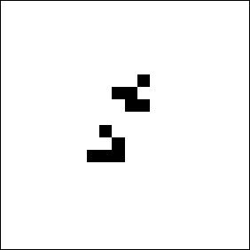
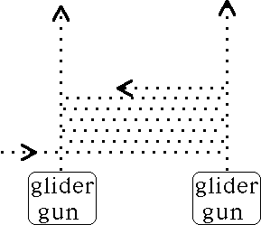
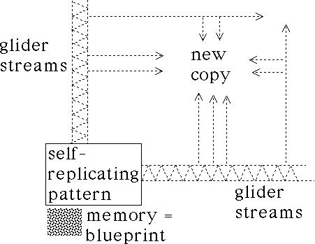

| Given a Life computer and memory, how can a self-replicating pattern be built? |
| We have seen that collisions of appropriately synchronized gliders can build a glider gun; simpler collisions can build eaters and blocks. |
| So a pattern can build a copy of itself if it can arrange appropriate collisions of gliders. |
| Two problems remain: |
| * the collisions must occur outside the pattern, |
| * and at least as collison mechanics are understood now, gliders are needed coming from all four directions. |
| This can be achieved by building glider streams in the form of constructor arms, and these use the kickback collision: an appropriately synchronized right angle glider collision can destroy the pair and produce glider reflected and shifted. |
|  |
| Click the picture to animate. |
| Two glider guns producing parallel streams of gliders can use kickback reactions to produce a stream of gliders shuttling between them. |
|  |
| Properly placed holes in one of the parallel streams can produce flotillas of gliders. |
| The west and south flotillas illustrated below are produced by such kickback gaps. |
| The north and east arms are also produced this way, and the north and east flotillas are produced by kickback reflections of gliders from the west and south constructor arms and reflected off the north and east arms. |
| With very careful timing, the collisions of the flotillas can buid a copy of the pattern, complete with memory (following von Neumann's solution). |
|  |
Return to Life.